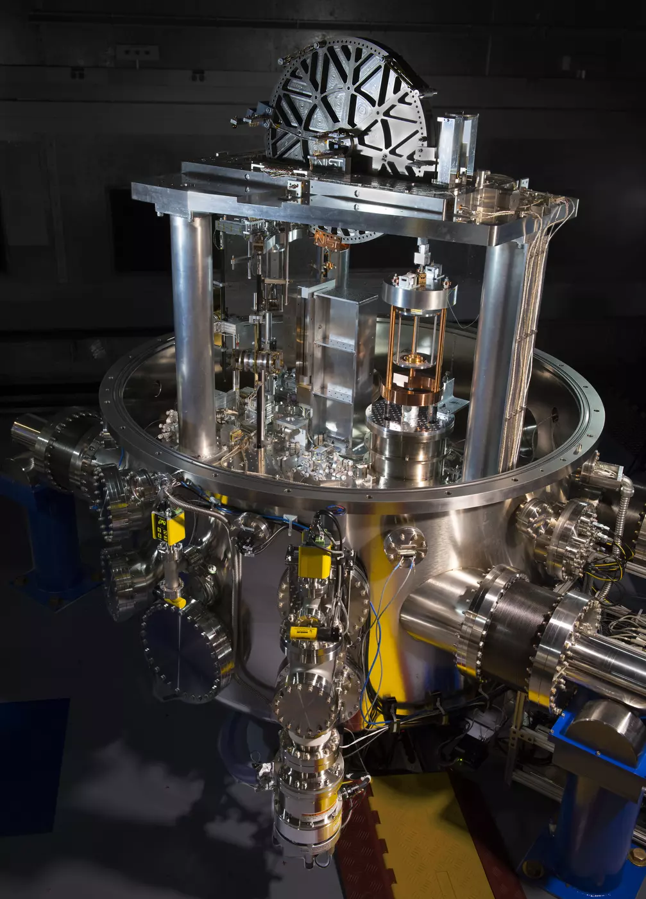

假如全世界用來判斷一公斤的最後依據，是一塊鎖在保險庫裡的金屬，它沾上一點東西之後，該說金屬變重了，還是一公斤變了？這不是繞口令。很長一段時間，國際公斤原器的質量就是一公斤的定義；其他砝碼要透過一連串比較，才能知道自己和它相差多少。2019 年，人們換了這個最後依據。問題是，一個寫在紙上的自然常數，要怎麼變成秤上的讀數？
美國國家標準暨技術研究院（NIST）的歷史介紹記錄，國際公斤原器是鉑銥合金製成的小圓柱，保存在法國塞夫爾的國際度量衡局。各國並不會把每一顆砝碼都送去碰它，而是先校正國家級基準，再用工作砝碼把標準一層層傳下去。這條留下比較紀錄的鏈，讓相隔很遠的實驗室與商店，能使用同一個質量單位[1]。
難處在於，金屬不是不變的。空氣中的污染物可能附著在表面，清洗也得遵循程序。NIST 對舊制度的回顧指出，原器副本與原器相比，質量曾出現緩慢的相對變化。但這種比較無法單獨告訴我們，究竟是原器減少、副本增加，還是兩邊都在變[2]。
只要原器仍是定義，它在這套單位裡就永遠恰好一公斤。你能說另一顆砝碼和它不一樣，卻不能只靠同一套比較，判定定義本身偏離了多少。保管得再仔細，也沒有消除這個困難：一個會受環境影響的物件，同時扮演了裁判與被測量者。
自 2019 年 5 月 20 日起，公斤改由普朗克常數 h 的固定數值來定義。國際度量衡局列出的值是 6.62607015 × 10⁻³⁴ 焦耳秒；這個單位也能寫成公斤乘公尺平方、除以秒。當公尺與秒已有定義，固定 h 的數值，就能把公斤也確定下來[3]。
這不表示有人從宇宙拿出一小塊常數，放到秤盤上。定義先回答「這個單位是什麼」；量測實驗則得建立一個與定義相符的質量值，並交代不確定度。度量衡學把後一步稱為單位的「實現」。國際度量衡局的實作文件特別說明，公斤的定義沒有指定只能使用哪一種實驗[4]。
重新定義之前，研究者用已知質量去測 h；選定與既有量測相容的數值之後，方向反過來，h 成為固定的起點，質量成為待求的量。改制要維持量測的連續性，不是趁機把市售一公斤重新切成另一個份量。改變的是基準的依據，而不是讓日常交易突然換一把秤。
其中一條實現路線是基布爾天平（Kibble balance）。依 NIST 的原理說明，先把待測物的重力，和通電線圈在磁場中受到的向上作用力平衡。調整電流，直到兩邊抵消，再記下讀數。這看起來像電磁鐵托住砝碼，卻還不能直接算出質量，因為線圈與磁場共同決定的作用強度，很難精確量到需要的程度[5]。
第二步改讓線圈在磁場中移動，量它的速度與感應電壓。移動多快、產生多少電壓，也受到前面那組線圈與磁場的影響。把兩種模式的關係式合在一起，難以直接測量的共同因子就能消去，留下電流、電壓、速度、當地重力加速度與質量的關係。
電壓與電阻再透過約瑟夫森效應、量子霍爾效應所建立的電學標準，連到 h。如此一來，質量可以由電學、時間與長度的量測求出，不必先拿另一顆一公斤砝碼當最後裁判。當地重力仍得實測，線圈的移動也得控制好；換成常數作定義，沒有讓實驗細節自動變得容易。

另一條路線從晶體出發。矽原子在晶體中有規律的排列，研究者可以量晶格的尺度，再量整顆矽球的體積，推算球裡有多少原子。NIST 介紹的國際亞佛加厥計畫，使用富含矽-28的單晶矽球，讓同位素組成比較單純，也讓這種推算能做到很高的精度[6]。
「數原子」因此不是顯微鏡拍下每一顆原子，再逐一打勾。它靠的是微觀排列與宏觀體積之間的關係；球面形狀、表面層、晶體缺陷與殘餘同位素，都會影響結果。國際度量衡局的實作文件把這條路線稱為 X 射線晶體密度法，並說明如何把原子質量與固定的 h 聯繫起來。
兩種方法讓我們有機會交叉檢查。基布爾天平主要處理力、運動與電學，矽球則仰賴晶體、幾何與原子質量的關係。當它們得到接近的結果，我們對實現方法更有把握；如果不一致，就得追查各自的量測與不確定度，而不是挑一顆物件宣布它永遠正確。
這個轉換沒有消滅不確定度。美國物理學會《Physics》的 2019 年報導指出，把 h 的數值固定後，原本放在常數量測上的不確定度，轉到了質量的實現上。原器也從「按定義恰好一公斤」，變成一件可以被重新量測、附上不確定度的物件[7]。
而且，這不是改制當年才有的過渡問題。國際度量衡局在 2026 年 2 月公告，第三次公斤共識值自同年 3 月 1 日實施。公告說明，在不同獨立實現的結果尚未達到足以確保國際一致性的程度前，由相關委員會協調，透過共識值傳遞公斤[8]。
這次相對前一共識值的調整是每公斤減少 5 微克，共識值的標準不確定度維持 20 微克。它調整的是實驗結果如何形成共同的質量尺度，並不是把普朗克常數改小，也不是重新修改公斤的定義。分清這兩層，才能理解為什麼「自然常數不變」與「校正值仍會更新」可以同時成立。
回到一台日常使用的秤。它通常不會內建整座基布爾天平，校正時仍需要實體砝碼。NIST 對新制度的說明強調，實體質量標準仍是日常校正很實用的方式；研究者還得處理真空中的精密量測，如何傳到在空氣中使用的砝碼，包括空氣浮力的影響[9]。
因此，新的制度沒有把比較鏈拆掉，而是換掉鏈條最上端的依據。實驗室先實現單位，再用經過校正的標準把它傳下去。每一層仍要記錄如何比較、何時校正，以及結果可以相信到什麼程度。常數提供穩定的定義，儀器與紀錄則讓這個定義成為別人可以使用、也可以檢查的結果。
那塊老金屬沒有失去歷史價值，也不必被丟棄。它失去的，是作為唯一最後裁判的地位。當不同地方的一公斤出現分歧，人們如今能做的，不只是把物件送回同一個保險庫，而是用不同方法回到共同定義，檢查差異從哪裡來。量測的可靠，不在於從此不會出錯，而在於我們有辦法辨認和修正錯誤。